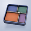
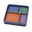
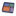
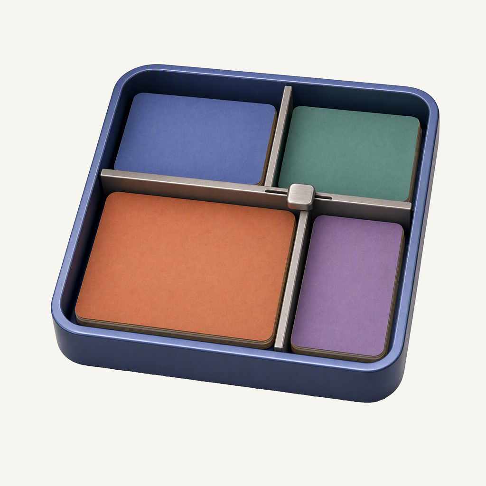
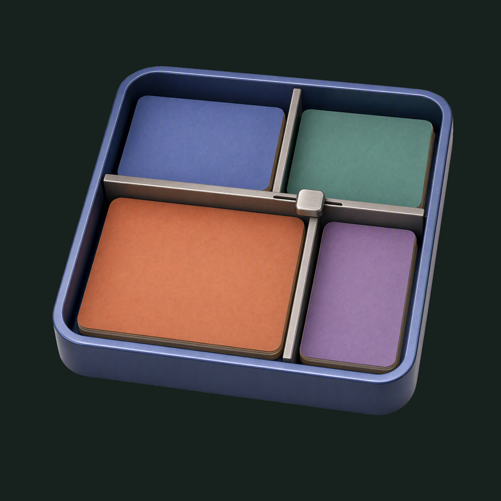

01 / Composition
Adjustable compartments
One sliding divider separates four unequal bays. The larger terracotta paper stack shows how space can be allocated while the complete tray remains one compact object.
Physical-object family · Refined identity
A workspace with room to adjust.
Adopted redesign · finishing 01
Native 2048 × 2048

01 / Composition
One sliding divider separates four unequal bays. The larger terracotta paper stack shows how space can be allocated while the complete tray remains one compact object.
02 / Drawing
An indigo anodized frame, brushed-metal fittings and matte paper stacks make the adjustable workspace tangible. Continuous material shading preserves the frame, reflections and paper edges.
03 / Presentation
Offset panel outlines and short alignment ticks sit on cool indigo-gray paper. The field, grain and projected shadows are separate layers, so the small application mark stays transparent.
Presentation tiles at 128/64 px; transparent artwork for small app and browser marks.



At 128/64 px, the four compartments and central divider remain distinct. At 32/24/16 px, the divided silhouette and four colors carry recognition; paper grain, metal texture and the adjustment slot merge. The native toolbar uses a 22 pt transparent mark. The sidebar and browser specimens are general identity scale studies; InfoSpace itself is a native macOS app.
A designed background, with colors sampled from the exact native artwork.
Select a swatch to copy its hex value. The native demo uses white controls on #13161C; its theme is separate from these sampled artwork colors.
One transparent foreground, checked on two contrasting backgrounds.


Azure Foundry · gpt-image-2 · one request · native 2048 × 2048
Loading study text…
References appear in the exact submitted order. Their role descriptions distinguish product evidence, material reference and presentation guidance.


{kind=link}
{kind=link}
{kind=link}
{kind=link}
{kind=link}